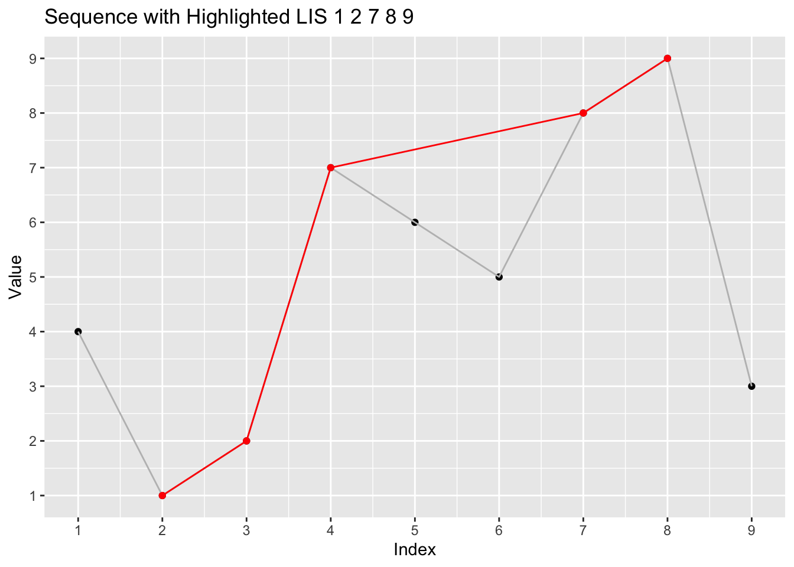

Code
library(ggplot2)
# Your original sequence
sequence <- c(4, 1, 2, 7, 6, 5, 8, 9, 3)
# The known LIS
lis <- c(1, 2, 7, 8, 9)
# Create a data frame for the original sequence
data <- data.frame(x = 1:length(sequence), y = sequence)
# Identify the indices of the LIS in the original sequence
lis_indices <- match(lis, sequence)
# Create a data frame for the LIS
lis_data <- data.frame(x = lis_indices, y = lis)
# Plotting the sequence and the LIS
ggplot(data, aes(x, y)) +
geom_point() +
geom_line(color = "gray") +
geom_point(data = lis_data, aes(x, y), color = "red") +
geom_line(data = lis_data, aes(x, y), color = "red") +
scale_x_continuous(breaks = 1:length(sequence)) +
scale_y_continuous(breaks = 1:max(sequence)) +
labs(x = "Index", y = "Value", title = "Sequence with Highlighted LIS 1 2 7 8 9")
